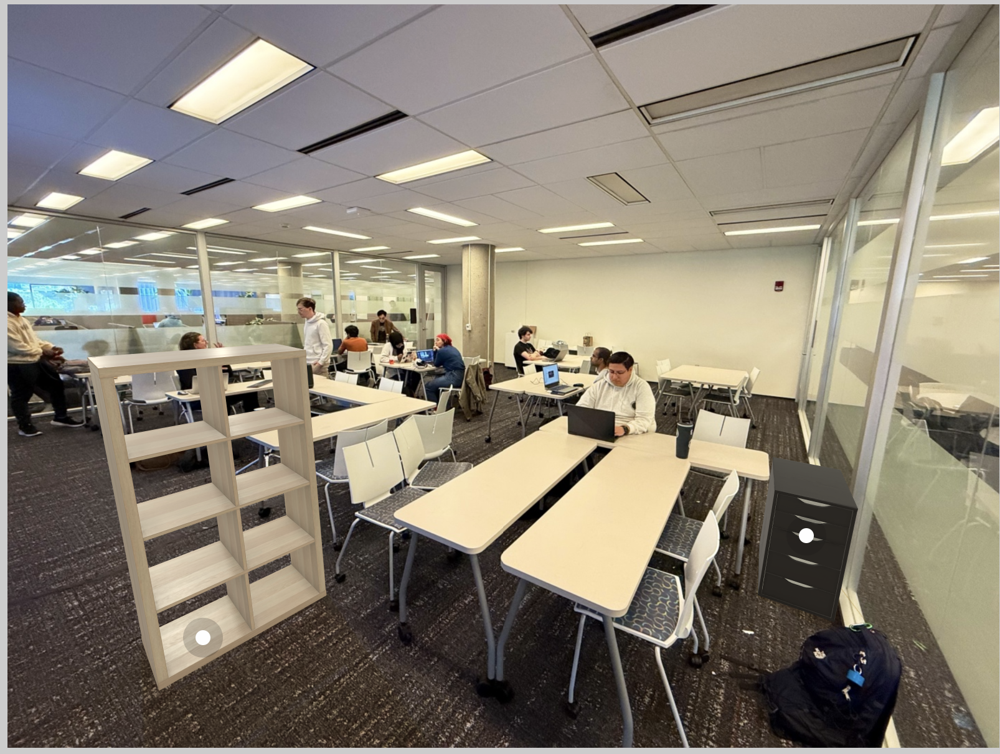
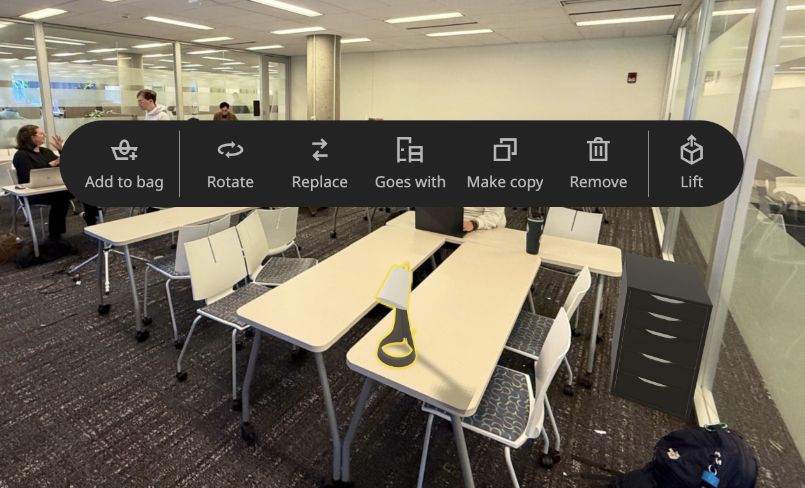

IKEA Kreativ is an augmented reality application within the IKEA app that allows users to design and visualize furniture in their real-world spaces before purchasing.
The app is designed for the general public, especially homeowners, renters, and people interested in interior design and buying new furniture from IKEA or just designing their home.


Uses smartphone AR (Apple's ARKit/Android ARCore). This is accessible but limited by device performance and camera accuracy.
Focuses on realism. Furniture is rendered to scale and placed in real environments.
Users interact through touch gestures (drag, rotate, place). The interaction is intuitive but sometimes imprecise.
Future improvements could include better realism, AI-based recommendations, and multi-user collaboration.